Why Choose Everest Security
Everest Security brings Israeli hi-tech systems and a trained 24/7 monitoring team together to protect homes, businesses and high-value sites. We verify alarms quickly, reduce false positives with multi-sensor analytics, and maintain systems so they work when it matters most.
Below you’ll find capabilities, process, proof (case studies), team, gallery and FAQ — everything to help you decide with confidence.
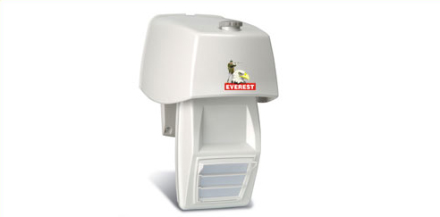
24/7 Live Monitoring — humans + tech
Our control room is staffed by trained operators 24 hours a day, every day. When a sensor or camera reports an event, operators verify using video/audio and sensor correlation before escalation. That means fewer false alarms and faster dispatch of real responders when required.
- Verified events — we don’t simply ring a bell.
- Fast escalation protocols — direct lines to local responders.
- Continuous system health monitoring with automatic alerts.
Why verification matters
False alarms waste time and reduce trust. We combine motion, tamper and environmental sensors with short camera clips and operator checks so only real threats are escalated. This saves money and improves response quality for you and emergency services.
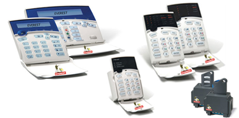
Robust Control Panels
Enterprise-grade panels with redundant reporting (IP/GSM), secure firmware and modular add-ons. Remote management enables diagnostics without site visits.
Typical uses: banks, warehouses, data centres, campuses.
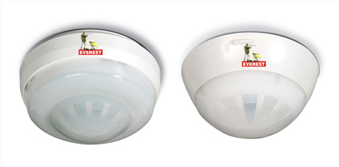
Sensor Fusion & False-Alarm Reduction
Motion + camera + environment sensing tuned per site. Day/night behaviours and high-traffic adjustments reduce nuisance alarms.
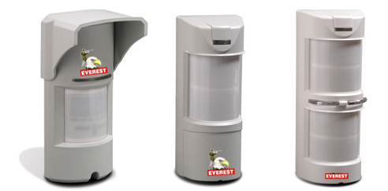
Perimeter & Exterior Detection
External detection arrays tuned for weather and vegetation. Triggers lights, PTZ sweeps and verification workflows.
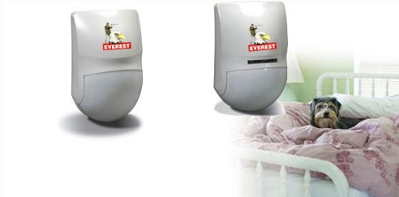
Wireless Resilient Systems
Low-power wireless mesh with GSM backup when needed — ideal where wiring is difficult.
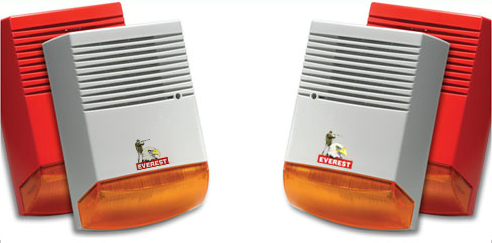
AI-Assisted Video Analytics
Optional analytics: object detection, loitering, line-crossing. Tuned to reduce false alerts from routine activity.
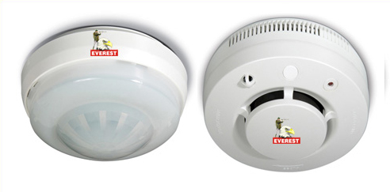
Scalable, Modular Design
Systems designed to grow. We keep changes backward-compatible and provide central firmware updates.
Our simple 5-step protection process
1. Site Survey
We map blind spots and recommend sensor placement — on-site or remote.
2. Design & Plan
We finalise reporting channels, power backup and integrations for a predictable install.
3. Professional Install
Certified technicians install, align and test every device.
4. Monitor & Verify
Operators verify and escalate per your plan — audio/video checks included.
5. Maintain & Improve
Routine checks, remote diagnostics and firmware updates keep systems healthy.
Case Studies
Logistics Yard — Theft Reduction
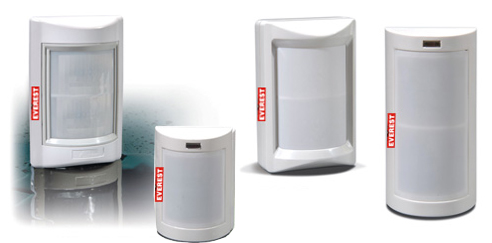
Perimeter EDS, PTZ cameras + operator verification reduced theft incidents by 92% in three months.
Bank Branch — ATM & Lobby Security
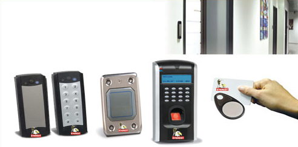
Silent alarms + live verification led to a quick police response and arrest in one incident.
Gallery
Control Centre
Actec Series
Indoor Sensors
Perimeter Sensors
Wireless Devices
Network Accessories
What clients say
“Everest's monitoring team saved our plant — verified an intrusion and police arrived within minutes.”
— A. Shah, Factory Manager“No more false alarms. System performs as promised and support responds quickly.”
— M. Iyer, Bank Operations“Professional install and timely follow-up — they took care of everything end-to-end.”
— S. Kumar, LogisticsCertifications & Partnerships
Frequently Asked Questions
Response depends on your escalation plan. Verified alarms are prioritised and local responders are contacted quickly when required.
Yes — most issues are resolved remotely. We monitor device health and push firmware updates centrally.
We support many standard cameras and integrate legacy systems using gateway interfaces.
Yes — our monitoring centre operates 24/7/365 with redundancy and trained operators.
Our team
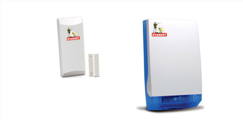
Head of Monitoring
10+ years in command centre ops.
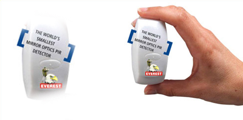
Lead Installer
Certified specialist for large sites.
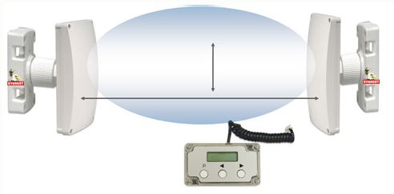
Remote Support
Firmware & diagnostics.